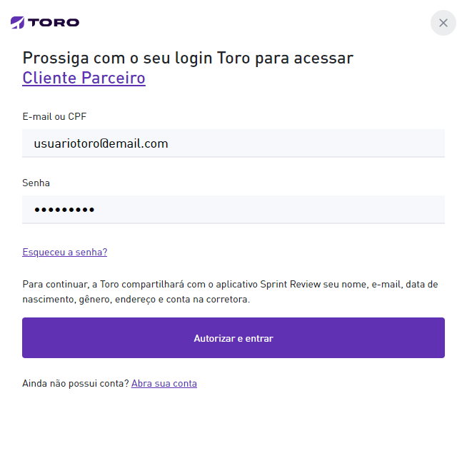
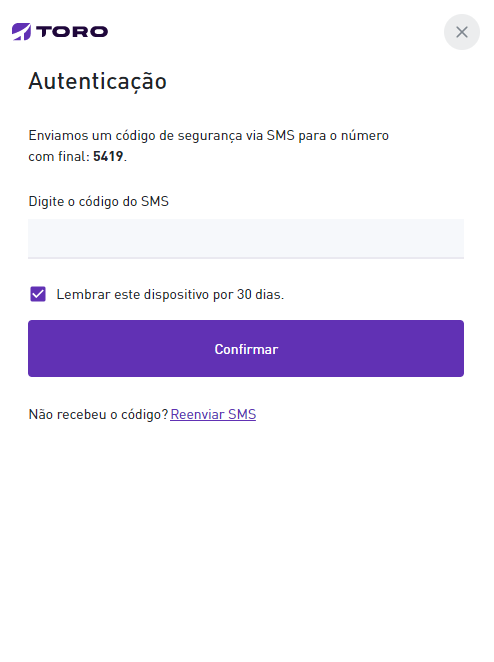

Apresentação
Bem-vindo à documentação para integração com a Toro Investimentos.
Essa documentação é destinada a parceiros que desejam oferecer uma experiência de integração e Login com a Toro.
Entre em contato com parceiros@toroinvestimentos.com.br para opter seu client_id e credenciais necessárias para integração.
Login com a Toro
Toro Connect (OAuth2 + OpenId Connect)
O fluxo de autenticação com a Toro segue o protocolo OAuth 2.0 juntamente com protocolo OpenID Connect na camada de identidade, através de uma biblioteca certificada e vastamente utilizada no mercado.
O Fluxo se dará da seguinte maneira:
1. Requisição de autenticação
O parceiro que deseja utilizar o provedor de autenticação da Toro deverá implementar um botão (ex. Entrar com a Toro) em sua plataforma, que levará o usuário para a página
https://conta.toroinvestimentos.com.br/oauth/authorize
, com os seguintes parâmetros - obrigatórios:
| Parâmetro | Valor | Descrição |
|---|---|---|
| client_id | {Código fornecido pela Toro Connect} | Identificador do parceiro |
| scope | {escopos separados por vírgula [URL encoded]} | openid (obrigatório); email, profile, accounts são opcionais |
| response_type | code | Valor padrão para este parâmetro |
| redirect_uri | https://url-de-callback-do-parceiro.com | URL de callback do parceiro |
| code_challenge | {código gerado a partir do code_verifier} | BASE64URL-ENCODE(SHA256(ASCII(code_verifier))) |
| code_challenge_method | S256 | Valor padrão para este parâmetro |
Exemplo da URL de autenticação
https://conta.toroinvestimentos.com.br/oauth/authorize?client_id=abcd&scope=openid%20profile%20email%20accounts&response_type=code&redirect_uri=https%3A%2F%2F.url-de-callback-do-parceiro.com&code_challenge=some-code-generated-by-the-method&code_challenge_method=S256
2. Autenticação
Uma tela de login será apresentada, onde o usuário irá se autenticar, primeiramente informando suas credencias e em seguida, informando o código de duplo fator recebido por SMS.


3. Código de autorização
Com o usuário autenticado, o provedor de autenticação Toro irá redirecionar a página para a url de callback do parceiro, com o código de autorização via parâmetro.
GET https://url-de-callback-do-parceiro.com?code=<código de autorização>
4. Obtendo o id_token
Requisição
curl --location --request POST 'https://conta.toroinvestimentos.com.br/oauth/token' \
--header 'Content-Type: application/x-www-form-urlencoded' \
--data-urlencode 'code=<codigo_de_autorização>' \
--data-urlencode 'client_id={identificador_do_parceiro}' \
--data-urlencode 'client_secret={segredo_do_parceiro}' \
--data-urlencode 'grant_type=authorization_code' \
--data-urlencode 'redirect_uri=https://url-de-callback-do-parceiro.com'
--data-urlencode 'code_verifier=<código_aleatório>'
Resposta
{
"access_token": "TfynRPIlOkC...",
"expires_in": 604,
"id_token": "eyJhbGciOiJSUzI...",
"scope": "openid email profile",
"token_type": "Bearer"
}
De posse do código de autorização, é necessário fazer uma requisição para o provedor de autenticação Toro para obter o id_token.
Requisição HTTP
POST https://conta.toroinvestimentos.com.br/oauth/token
Corpo da requisição
| Propriedade | Valor | Descrição |
|---|---|---|
| code | {código} | Valor gerado pelo Toro Connect e retornado no passo anterior via parâmetro code |
| client_id | {Código fornecido pela Toro Connect} | Identificador do parceiro |
| client_secret | {Código fornecido pela Toro Connect} | Segredo que deve ficar de posse e responsabilidade do parceiro |
| grant_type | authorization_code | Valor padrão para esta propriedade |
| redirect_uri | https://url-de-callback-do-parceiro.com | URL de callback do parceiro |
| code_verifier | {código aleatório} | Valor aleatório gerado anteriormente, esse código é utilizado também para criar o code_challenge |
Escopos (Scopes)
Ao logar com a Toro, é possível informar três escopos - além do openid, que é obrigatório. Eles são:
- profile
- accounts
Ao informar email nos escopos
{
"profile": {
"email": "email@exemplo.com",
"email_verified": true
}
}
Informando email nos escopos, será possível recuperar os seguintes dados do id_token:
profile
Ao informar profile nos escopos
{
"profile": {
"birthdate":"2000-01-01T02:00:00.000Z",
"gender":"male",
"locale":"pt-BR",
"name":"João da Silva",
"updated_at":"2021-09-02T18:43:40.000Z",
"zoneinfo":"America/Sao_Paulo"
}
}
Profile traz as seguintes informações do usuário:
accounts
Accounts é responsável por trazer as contas de um usuário, sinalizando qual delas, caso tenha mais de uma, é a conta principal:
Ao informar accounts nos escopos
{
"profile": {
"accounts": [{
"main": true,
"number": "47157",
"checkDigit": "0"
}]
}
}
Exemplo
Exemplo de um id_token decodificado, com todos os escopos apresentados
{
"profile": {
"sub": "123456",
"email": "email@exemplo.com",
"email_verified": true,
"birthdate": "2000-01-01T02:00:00.000Z",
"gender": "male",
"locale": "pt-BR",
"name": "João da Silva",
"updated_at": "2021-09-02T18:43:40.000Z",
"zoneinfo": "America/Sao_Paulo",
"accounts": [{
"main": true,
"number": "47157",
"checkDigit": "0"
}],
"at_hash": "yaP5fqQGzK4pzwiyFewcRg",
"aud": "efc6f9b8827d4bceac2deb42dd89c362",
"exp": 1631564411,
"iat": 1631564187,
"iss": "https://conta.toroinvestimentos.com.br"
}
}
Ao lado está um exemplo de retorno com todos os escopos apresentados.
OpenID Client
Abaixo uma lista de bibliotecas certificadas:
.Net Core
- [IdentityModel.OidcClient 2.0]https://github.com/IdentityModel/IdentityModel.OidcClient)
Javascript
PHP
Python
TypeScript
Erros
Ao requisitar o id_token, alguns erros podem ocorrer. Abaixo segue o layout de como o erro é retornado do provedor de autenticação Toro.
layout do erro
{
"error": "unauthorized_client",
"error_description": "requested grant type is not allowed for this client"
}
Um erro pode acontecer se algum parametro passado, como um response_type, for diferente do cadastrado no Toro Connect. Nesse caso, o layout da resposta é composto por uma propriedade chamada error e outra chamada error_description, que seria o nome do erro e sua descrição, respectivamente.
Exemplo ao lado.